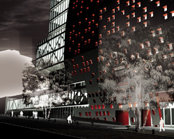
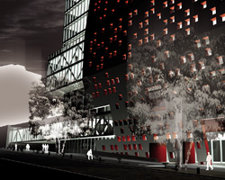

NUESTRO ESTUDIO
La arquitectura erigida como discurso unívoco no puede funcionar como soporte y catalizador de la diversidad y los cambios constantes en la sociedad.
Pensar la arquitectura como proceso contínuo, investigar los modos de producir ya aceptados, comprender las demandas sociales cambiantes, nos conducen a una reflexión permanente que nos permite entender y posicionarnos en el mundo en el que vivimos.
Pensar la arquitectura en forma vectorial la libera de parámetros estériles y le otorga dinamismo, apertura y libertad. Esta dirección se anclará en el presente y va a potenciarse con la historia para proyectarse hacia el futuro. Estará orientada por las necesidades y problemas contemporáneos, hacia una producción sustentable que brinde bienestar y proyección a las personas, a la obra y a su entorno.
La búsqueda delsentido propio de la arquitectura, de la expresión autentica de la disciplina supone posibilidades infinitas; buscamos una arquitectura que aporte otros paradigmas. Proponemos espacios capaces de representar la heterogeneidad social de nuestro tiempo, espacios en los que puedan instalarse nuevas soluciones, nuevas experiencias, nuevos escenarios donde todos los actores encuentren nuevas posibilidades.
Nuestro estudio apunta al desarrollo de la arquitectura como un proceso contínuo.
Que reelabore las necesidades y potencialidades que le dieron lugar, y que se desarrolle no sobre un concepto estático, sino sobre una dirección, orientada hacia la búsqueda presente, futura y común de mayores grados de libertad.
 
